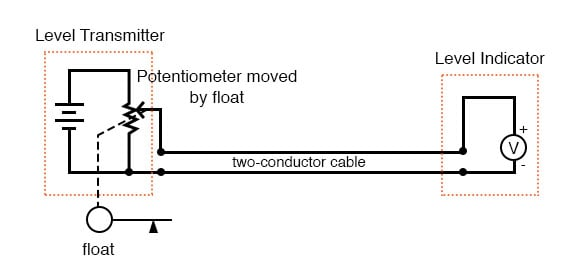
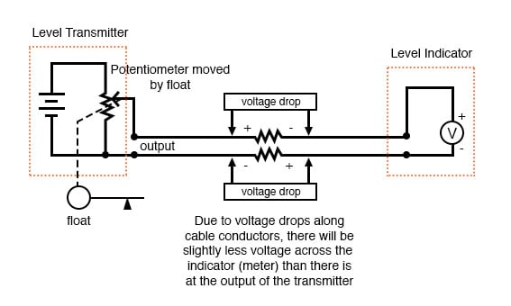

The use of variable voltage for instrumentation signals seems a rather obvious option to explore. Let’s see how a voltage signal instrument might be used to measure and relay information about the water tank level:

The “transmitter” in this diagram contains its own precision regulated source of voltage, and the potentiometer setting is varied by the motion of a float inside the water tank following the water level. The “indicator” is nothing more than a voltmeter with a scale calibrated to read in some unit height of water (inches, feet, meters) instead of volts.
As the water tank level changes, the float will move. As the float moves, the potentiometer wiper will correspondingly be moved, dividing a different proportion of the battery voltage to go across the two-conductor cable and on to the level indicator. As a result, the voltage received by the indicator will be representative of the level of water in the storage tank.
This elementary transmitter/indicator system is reliable and easy to understand, but it has its limitations. Perhaps greatest is the fact that the system accuracy can be influenced by excessive cable resistance. Remember that real voltmeters draw small amounts of current, even though it is ideal for a voltmeter not to draw any current at all. This being the case, especially for the kind of heavy, rugged analog meter movement likely used for an industrial-quality system, there will be a small amount of current through the 2-conductor cable wires. The cable, having a small amount of resistance along its length, will consequently drop a small amount of voltage, leaving less voltage across the indicator’s leads than what is across the leads of the transmitter. This loss of voltage, however small, constitutes an error in measurement:

Resistor symbols have been added to the wires of the cable to show what is happening in a real system. Bear in mind that these resistances can be minimized with heavy-gauge wire (at additional expense) and/or their effects mitigated through the use of a high-resistance (null-balance?) voltmeter for an indicator (at additional complexity).
Despite this inherent disadvantage, voltage signals are still used in many applications because of their extreme design simplicity. One common signal standard is 0-10 volts, meaning that a signal of 0 volts represents 0 percent of measurement, 10 volts represents 100 percent of measurement, 5 volts represents 50 percent of measurement, and so on. Instruments designed to output and/or accept this standard signal range are available for purchase from major manufacturers. A more common voltage range is 1-5 volts, which makes use of the “live zero” concept for circuit fault indication.
REVIEW: